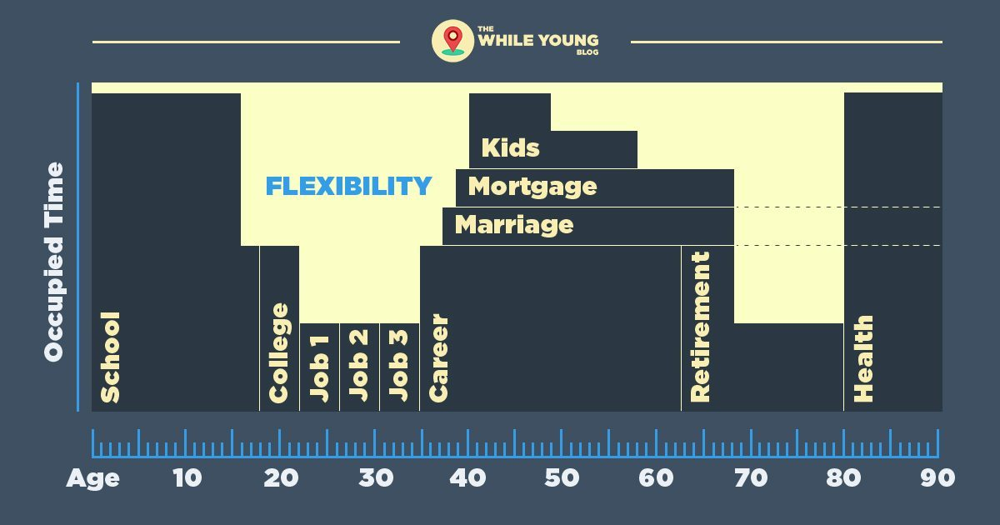

Why Travel While Young?

The greatest advantage I have had in life is that when I was young, I had many adults whom I respected tell me to, “do it while you’re young.” Of course, “it” could mean anything: take a risk, start a business, save for retirement, but for me, it meant travel. One day after years of hearing their advice, I started listening and I’ve been on a grand adventure ever since. This poses the question: Why Travel While Young?
Why Travel? This is Why.
People say carpe diem like as if you don’t know what the future holds. Though you can’t know if this is your last day in good health or not, for many people, life can be somehow predictable. I’ve made this infographic to represent an average American’s life who sticks to the traditional routine of education, career, family and retirement. The dark blue represents things in our life which make travel more difficult. The yellow represents time of greater flexibility.

Let me break this down.
Education
The first 18 years of our lives are spent getting educated. Unless you have a family that travels, chances are that you won’t have a lot of opportunities to go out and see much of the world. Even then, you won’t have much autonomy in making travel choices. The big exception to this is to become a youth exchange student. I am a supporter of the Rotary Youth Exchange Program, which I participated in at age 17 for a year in Germany. (leave me a comment below if you would like me to connect you with your local Rotary Club for more information)
Related Post: The Secret To All My Success
The gaps between high school and college, and between college and starting your career, are excellent times to travel. Those are the two points in your life when you are truly free to choose for yourself. You may feel the pressure to hurry to college, or hurry to work, but the fact of the matter is that those things will always be there for you. If you want to hold off a week / month / year to gain some experience seeing the world, you will be that much more well prepared for those next-steps and seen as a much more attractive candidate by the gatekeepers of your future.
Of course, you can also study abroad for part or all of college or graduate school. There are many programs that will fund your way to study around the world. When looking into these, you will read a lot of prestigious language which might discourage you from applying, but I assure you that they need you to apply as much as you want them to say yes!
Related Post: 19 Amazing International Fellowship Programs
Career
Gone are the days of graduating from college and going to one job for the rest of your life. Increasingly, recent graduates are discovering the importance of gaining a myriad of diverse experience. There is a big world out there and a lot to learn about it. As your first few jobs come and go, consider planning some travel in-between, or making one of these jobs at an international location. You may also be interested in participating with a professional fellowship program abroad.
Related Post: Negotiating Travel At Your Job
Your career may very well let you to travel and work abroad, but these jobs are rare. When traveling for work, you will have to travel at someone else’s discretion. Still, some of my best travel experiences have been on behalf of my employer. Look for careers that involve travel and find an employer which is flexible in working with you to pad business travel with some personal experiences as well.
Family
The joys of starting and having a family is the pinnacle of achievement for many. However, that little bundle of joy does not travel easily or cheaply. The more mouths you have to feed and fly, the more difficult it is to afford travel. Plus, you aren’t likely to couch surf with a baby in tow. Once a child comes around, your next 18 years will be spent getting them ready to launch into the world on their own grand adventures.
Consider for a moment that traveling before you start a family is one of the best ways to become a more well-rounded person, and an even better parent. The experiences you will gain from learning about a different way of doing things and different cultures (even in your own country) are the type of valuable life lessons you can give to your child and give them that much more of an advantage in their own life.
Related Post: 8 Things To Tell Your Family Before You Travel
Retirement
Work hard, play hard (in that order!) The most inspirational adults in my life have had the most breathtaking travel experiences in their retirement. There is a lot to be said for achieving the time and financial flexibility to live adventurously in your later years, so you should prepare yourself for that. However, you can not know what life will throw at you along the way and retirement travel is simply a pipe dream for many. If you aren’t in the habit from a young age, chances are slim you will suddenly start to have an adventure once you retire. For some inspiration, go watch the Pixar movie Up (2009).
Related Post: Three Ways Travel Changed My life When I Was Young
Conclusion
Though you will have many opportunities in life to accomplish all the things on your bucket list, there is no better way to ensure you achieve those goals than by starting while young. Get in the habit early, adventure often and always be young at heart!
Now it’s your turn! What is your story? What have you learned? Comment below to share or connect with me directly at @JudsonLMoore